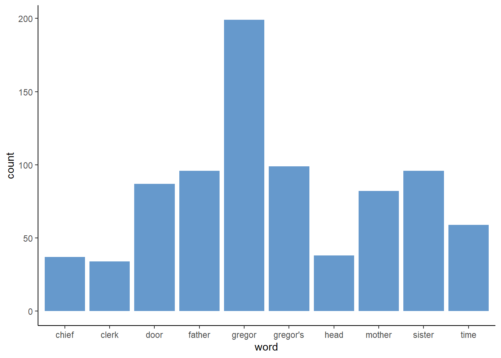
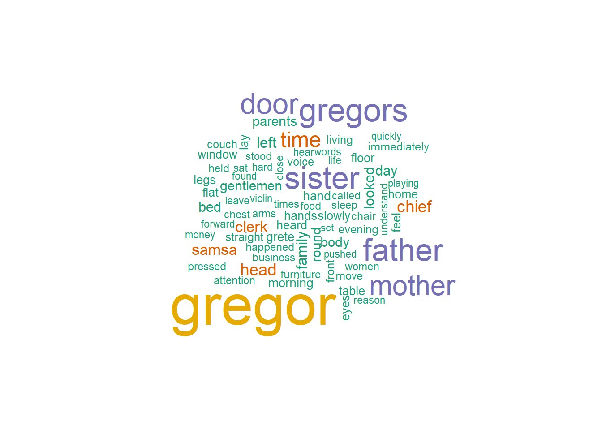
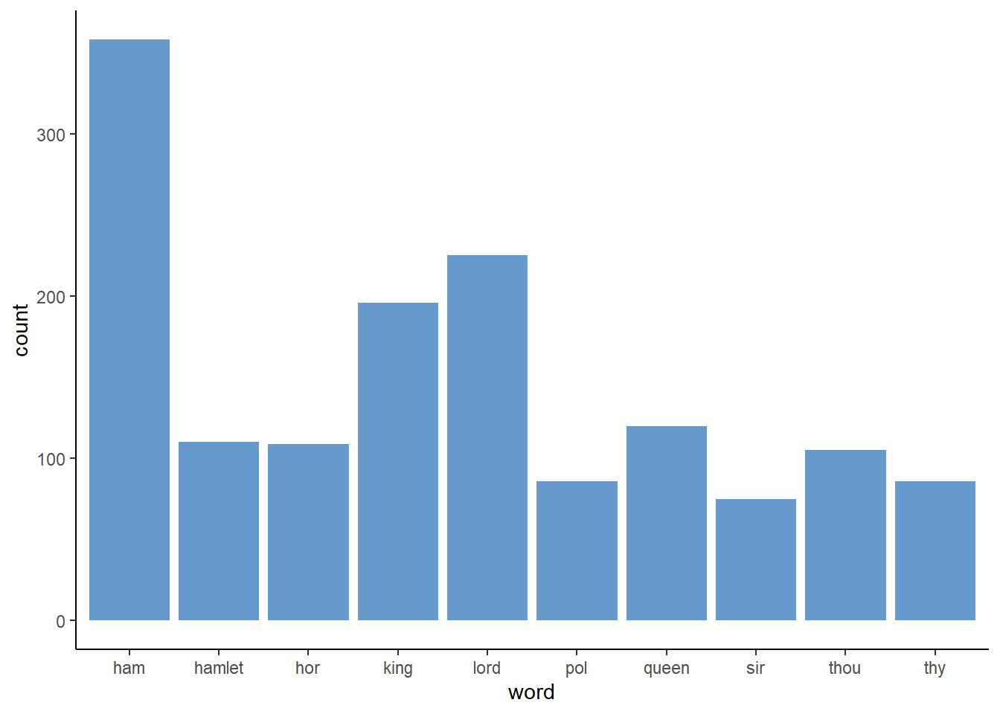
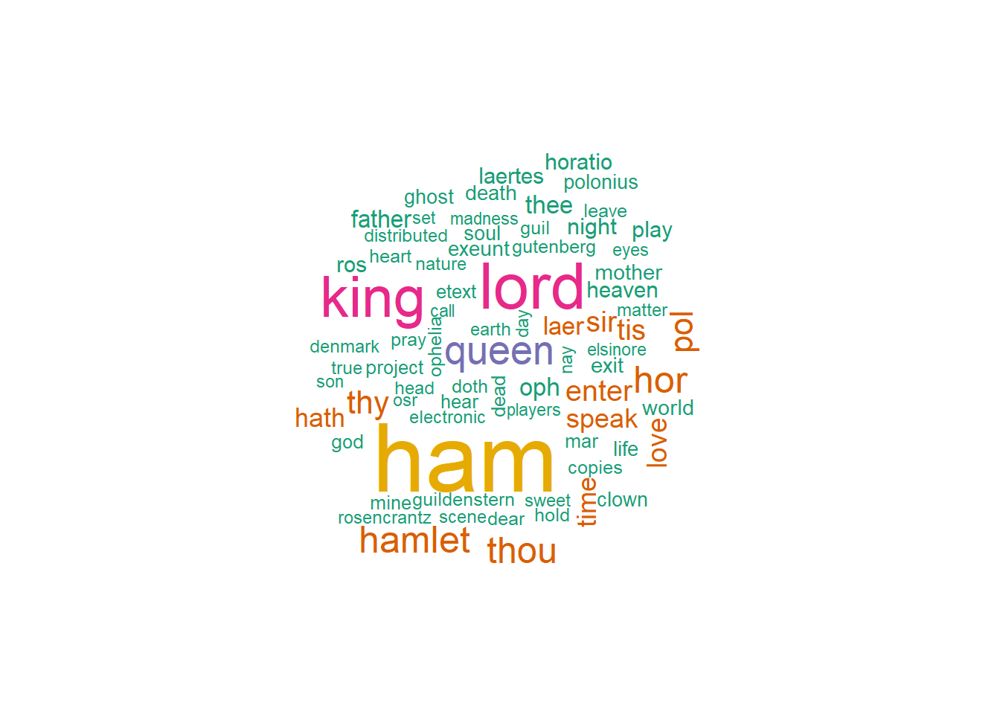

The first step in any data science project should always be to get a sense of your data. For NLP, a lot of exploratory data analysis revolves around counting the frequencies of different terms and plotting them in different ways. This can be as simple as a bar chart looking at the count of distinct words, to word clouds, to something as complex as a TF-IDF.
Before we go any further, we first need to set up our workspace. We will primarily be working with tidytext to keep ourselves in the tidyverse and will be pulling data from gutenbergr, which is a repository of free classic texts. Let’s start by loading in our data, Metamorphosis by Kafka, and unnesting it into tokens.
library(gutenbergr)
library(wordcloud)
library(ggplot2)
library(tidytext)
library(dplyr)
library(kableExtra)
meta = gutenberg_download("5200")
tokens = meta %>%
unnest_tokens(word, text) %>%
anti_join(stop_words) Next we can create a simple bar plot looking at the top ten words (not including stop words of course) used in the book.
word_count = tokens%>%
group_by(word)%>%
summarise(count = n())%>%
arrange(desc(count))%>%
slice(1:10)
ggplot(data = word_count)+
geom_bar(aes(x = word, y = count), stat = "identity", fill = "#6699cc")+
theme_classic()
Another way to present summary statistics is with a word cloud. For the uninitiated, a word cloud is just a collection of words with the size of the word determined by its prevalence. The natural disadvantage of this is that longer words will appear larger than smaller words, thus making them look more prevalent.
Actually creating the wordcloud is very easy. Just wrap a character vector in wordcloud(). We can remove some of the less frequent words using either the min.freq argument or the max.words argument.
wordcloud(tokens$word, max.words = 75, colors=brewer.pal(6, "Dark2"))
Load the text from Hamlet and create a bar chart depicting the 10 most frequent words from the text.
** Hints ** The gutenberg ID for Hamlet is 1787.
Use gutenberg_download to download the text from Hamlet by inputting the appropriate ID for Hamlet (1787). Then use unnest_tokens to tokenize the text by individual word (n=1).
library(gutenbergr)
library(wordcloud)
library(ggplot2)
library(tidytext)
library(dplyr)
library(kableExtra)
meta = gutenberg_download("1787")
tokens = meta %>%
unnest_tokens(word, text) %>%
anti_join(stop_words)
word_count = tokens%>%
group_by(word)%>%
summarise(count = n())%>%
arrange(desc(count))%>%
slice(1:10)
ggplot(data = word_count)+
geom_bar(aes(x = word, y = count), stat = "identity", fill = "#6699cc")+
theme_classic()
Create a Wordcloud to display the most common words in Hamlet.
wordcloud(tokens$word, max.words = 75, colors=brewer.pal(6, "Dark2"))
Using the unnest_tokens() function, you can easily tokenize (or break down) text data into single words, two consecutive words, three consecutive words, and so forth by setting n equal to the number of words you would like your data broken into. From here, it is fairly easy to group by you words, bigrams, trigrams, etc. and create a count of those text chunks across your entire dataset. This allows you to look at the frequency of your tokens (in this case words) to further analyze your data.
As you can see by looking at the bar chart or Wordcloud in the above Hamlet example, words like “Ham”
Visualizations like bar charts and word clouds make it easier to digest the information you are gathering, and only require a few lines of code after tokenizing and cleaning your data!